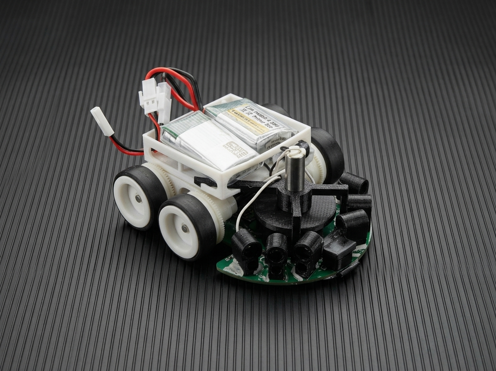

Micromouse Autonomous Maze Solver
A micromouse built to explore, map and solve a 16×16 maze at speed, competing nationally.

Overview
Micromouse competitions reward the intersection of speed and certainty: a robot has to map an unknown 16×16 maze in real time, then commit to the fastest verified route through it. The current generation, Chia v4, pushes this further with a suction fan for added traction and 7.4V coreless motors, reaching a verified stable top speed of up to 6 m/s.
Chia v4 uses a raw IR7 sensor array for wall detection during exploration and speed runs. Since this mouse is entered in upcoming competitions, most of its design and firmware details are being kept under wraps for now, with a full write-up to follow once those runs are complete.
Key Features
- 01Raw IR7 sensor array for wall detection during exploration and speed runs
- 027.4V coreless motors paired with a suction fan for added traction at speed
- 03Verified stable top speed of up to 6 m/s
- 04Competed in the finals of SLIIT RoboFest 2026, University Category, after qualifying with the earlier Blaze v2 generation
Older Micromice
Chia v4 (above) is the current mouse. Before it came five earlier builds. Full write-ups for all of them live in the micromouse-showcase repo.